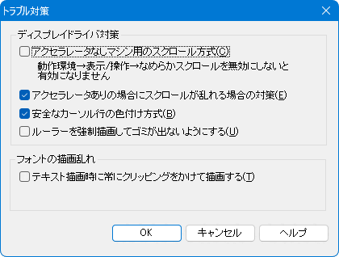

[HME0016B]
●秀丸の画面だけが乱れる（その２）

-
画面をスクロールさせたときにカーソルのある行の表示が乱れたり、ルーラーの表示が乱れたりします。
他のアプリケーションはまったく正常なので、秀丸エディタのバグだと思うんですが？

-
下記の設定を試してみてください。現象が改善するようであれば、ディスプレイドライバ側のバグが考えられます。
秀丸エディタの動作設定
「その他」 → 「動作環境」 → 「トラブル対策」の対策レベルを調整してみてください。
また、「詳細」ボタンで表示される内容に関してもチェックボックスのON/OFFを切り替えてみてください。

もし、日本語など半角英数字以外の表示がおかしくなっている場合は、エンコードがあっていない可能性があります。
この場合は、[HME0051A]●漢字コードの使い分けを参考に文字コードの食い違いが起きないようにしてください。